XGen 工具架和“生成 > 交互式修饰工具”(Generate > Interactive Groom Tools)菜单中将显示以下工具。按住 Shift 键并单击鼠标右键，可使用标记菜单在交互式修饰工具之间快速切换。单击鼠标右键可访问选定工具的标记菜单。有关与这些工具关联的公用设置列表，请参见公用笔刷设置。
| 工具名称 | 用途 | 示例 |
|---|---|---|
|
密度(Density) |
在笔刷半径内的区域上添加、移除或重新分布头发（单位数/面）。通过该工具可根据需要使特定区域中的头发变稀或变厚。 密度笔刷笔划在网格曲面上局部设置密度值。这些值将保存到 description_base 节点，而不是雕刻层。这意味着不能使用雕刻层对“密度”(Density)笔刷进行分层或融合。 |
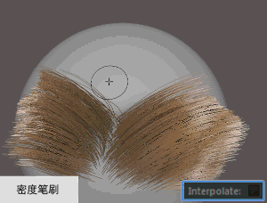
|
| 放置(Place) |
将单一发股放置在角色网格的曲面上。若要精确地定位每根头发，请使用此工具。 请参见放置笔刷设置。 |
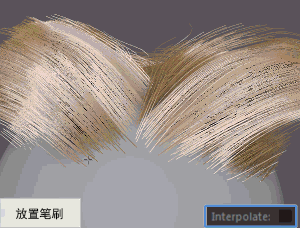
|
|
长度(Length) |
均匀地拉长或缩短头发，而不修改其形状。您可以设置最小值和最大值来限制笔刷笔划应用的最终长度。 该笔刷将局部缩放头发长度。您可以使用“比例”(Scale)修改器全局缩放头发。 请参见长度笔刷设置。 |
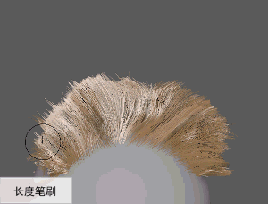
|
|
切割(Cut) |
修剪与笔刷半径相交的头发。 请参见修剪笔刷设置。 |
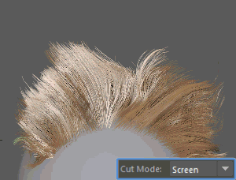
|
|
宽度(Width) |
缩放头发的宽度，而不修改其形状。该工具还可用于使头发变稀并沿细线平滑过渡。 “宽度”(Width)笔刷将在头发上设置逐 CV 宽度值。这些值将保存到 descriptionShape 节点，而不是雕刻层。这意味着不能使用雕刻层对“宽度”(Width)进行分层或融合。 请参见 descriptionShape 节点属性。 e 另请参见宽度笔刷设置。 |
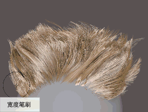
|
|
扭曲(Twist) |
允许您沿样条线和导向的长度方向旋转 CV，而不影响头发的整体曲率或形状。 该工具专为将最终修饰转化为 Maya 几何体的工作流（例如，修饰游戏角色）而设计。使用“扭曲”(Twist)笔刷，可旋转和对齐单根头发或单个导向的每个分段，以便生成的多边形条带正确覆盖所有角度的角色网格曲面。使用“扭曲”(Twist)笔刷之前，请禁用描述的“朝向摄影机”(Face Camera)属性。 请参见准备修饰以便转化为几何体和扭曲笔刷设置。 |
|
|
梳理(Comb) |
更改在笔刷笔划的方向上头发的方向和弯曲。笔刷半径内的头发在您拖动时会受到影响。 该工具可用于绘制出头发的基础形状和样式，以及对修饰进行最终的细微润色。 请参见梳理笔刷设置。 |
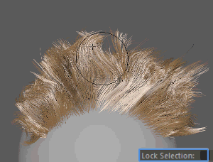
|
|
抓取(Grab) |
选择头发并根据您拖动的方向和距离移动头发。单击该工具时，当前选择将自动锁定到笔刷半径内的头发 CV。只有这些头发才会受笔划的影响。 使用该工具可以通过推动或拉动选择的头发确定头发形状。该工具可用于绘制出头发的基础形状和样式，以及对修饰进行最终的细微润色。 请参见抓取笔刷设置。 |
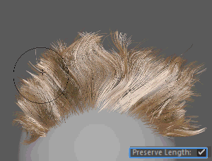
|
|
平滑(Smooth) |
通过平均化 CV 偏移，可将平滑应用于笔刷半径内的头发。这将在笔刷笔划方向上创建头发拉直效果。您可以全局平滑头发，相对于彼此影响所有头发；或者局部平滑头发，分别将效果应用于每根头发。 使用该工具可拉直头发并融合头发的方向，同时在长头发与短头发之间创建平滑过渡。在其他交互式修饰工具已处于活动状态时，按住 Shift 键可激活“平滑”(Smooth)工具。 请参见平滑笔刷设置。 |
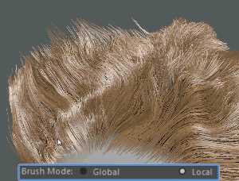
|
|
噪波(Noise) |
沿笔刷半径中发股的长度方向应用 3D 噪波效果。使用该工具可改变头发的方向，这将打乱头发的统一外观并创建纹理。 请参见噪波笔刷设置。 |
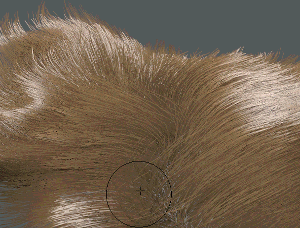
|
|
束(Clump)  |
通过将头发拉向笔刷半径内的集中式头发创建发束。将头发扎成束可以断开其均匀流动，使头发看起来更逼真。成束效果随每个笔划递增。对区域进行的修饰越多，成束效果越明显。 在“已锁定”(Locked)模式下使用此笔刷，可从选择的锁定头发创建发束。在“浮动”(Floating)模式下使用此笔刷，可随笔刷在网格曲面上移动时沿笔划将头发扎成束。 请参见成束笔刷设置。 |
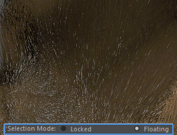
|
|
分离(Part) |
通过将头发旋转偏离轴或者推离笔划中心，使其彼此分离。 使用该工具可创建分模线或断开毛发中的头发流动（例如，如果皮肤皱褶并相互摩擦）。 请参见分隔笔刷设置。 |
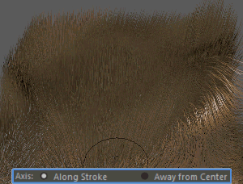
|
|
冻结(Freeze) |
锁定发股上的 CV，使其他修饰工具无法修改它们。CV 被冻结的头发显示为蓝色。 使用该工具可隔离您不希望受笔刷笔划影响的区域。这样更易于在特定区域中修饰头发，同时避开附近的头发。 “冻结”(Freeze)笔刷的效果是全局的，因此无法使用雕刻层进行分层或融合。 请参见冻结笔刷设置。 |
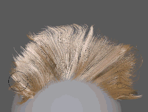
|
|
选择(Select) |
通过绘制选择发股。使用该工具可选择要在场景中显示或隐藏的发股。 此工具将全局选择头发，因此无法使用雕刻层对其效果进行分层或融合。 请参见选择笔刷设置。 |
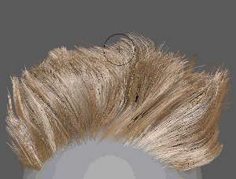
|